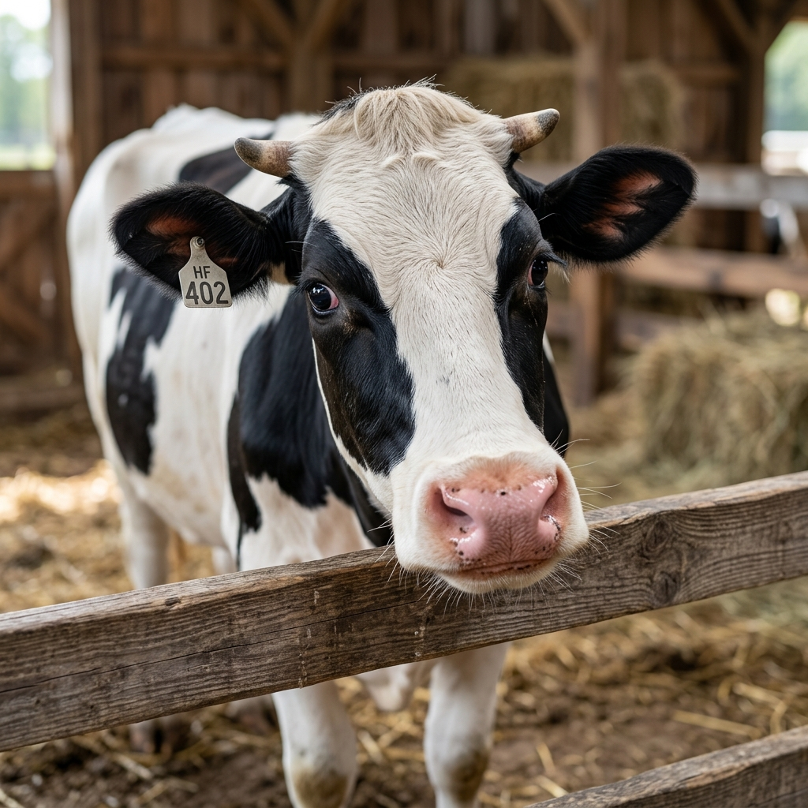

Motor de Requerimientos Nutricionales • Sistema Métrico (kg) • NASEM 2021

| Elemento | Requerimiento / kg MS | Consumo Diario Total |
|---|
| Elemento | Requerimiento / kg MS | Consumo Diario Total |
|---|
DCAD (mEq/kg MS) = [(%Na / 0.023 + %K / 0.039) - (%Cl / 0.0355 + 2 * %S / 0.016)] * 10
Agua Requerida (L/día) = 15.99 + (1.58 * DMI_kg) + (0.90 * Leche_kg) + (0.05 * Na_g) + (1.20 * Temp_C)
Perfil Óptimo CNCPS: Lisina Metabolizable (MP Lys) = 6.9 - 7.2% del MP Total | Metionina Metabolizable (MP Met) = 2.6 - 2.8% del MP Total | Relación Ideal Lys : Met = 2.7 : 1.0.
FE (kg leche / kg MS) = Leche corregida por grasa al 3.5% (FCM) / Consumo de materia seca (DMI, kg/día).
Meta Reproducción y Calidad de Ovocito/Embrión (FIV): Grasa Total = 5.0 - 7.0% de la MS | Grasa Inerte Protegida = 1.5 - 3.0% MS (300-500 g/d en sales de Ca) | Relación Ideal Ω-6 : Ω-3 = 4.0 : 1.0 a 5.0 : 1.0.
Haz cualquier pregunta sobre nutrición de rumiantes (DMI, DCAD, agua, aminoácidos CNCPS, fibra uNDF240h, eficiencia alimenticia FE, ácidos grasos Omega-6/3, dietas de vacas secas o requerimientos minerales). El asistente verificará y responderá con base estricta en nuestra base de datos empírica.